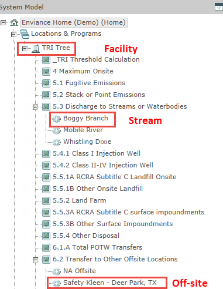

Location tags are used to identify Facilities, Streams, and Off-Site Locations. (POTWs are not tagged in the system.) The image below highlights the different locations that are in the system model tree.

The Facility tag would be added to the facility object 'TRI – Demo'. A facility tag is built by concatenating.
'E:TRI_' Facility Code '_' TRI Section '_' LocationType '_' LocationID
A sample facility tag is
E:TRI_GV_0_FAC_EPAIDABC
The stream tag would be added to the point of interest 'Boggy Branch'. A stream tag is built by concatenating.
'E:TRI_' Facility Code '_' TRI Section '_' LocationType '_' StreamName
A sample facility tag is
E:TRI_GV_5.3_BOGGYBRANCH
For stormwater, the tag includes the stormwater indicator 'STM'
E:TRI_GV_5.3_SW_STM_BOGGYBRANCH
The off-site tag is added to the facility object 'Safety Kleen – Deer Park'. An off-site tag is built by concatenating.
'E:TRI_' Facility Code '_' TRI Section '_' LocationType '_' LocationID
A sample facility tag is
E:TRI_GV_6.2_OFF_OFFSITEPAID
Location Tag Details
Each part of the facility tag is outlined in the table below.
|
Tag Part |
Description |
Facility Example |
|
E:TRI_ |
All TRI tags begin with the text 'E:TRI_' |
E:TRI_ |
|
Facility Code |
The facility code is used to group all of the tags of a single facility together. It is a two-letter code (exactly two letters) that is used by the client to identify the facility in their own databases and is defined in the facility tag. |
GV |
|
TRI Section |
This is the section of the FormR where the location is used. For location tags the only possible values are: Facilities = 0 Streams = 5.3 Offsites = 6.2 |
0 |
|
Location |
The location type is used to define the tag as a 'Location Tag' instead of a data tag. The three possible values are: Facilities = FAC Streams = STM Offsites = OFF |
FAC |
|
LocationID |
For facilities and off-site locations, the LocationID is the EPA designated ID number. This number must be unique since it is the key that is used to map the facility or off-site described in the system model with the facility or off-site location in the TRI application. |
EPAIDABC |